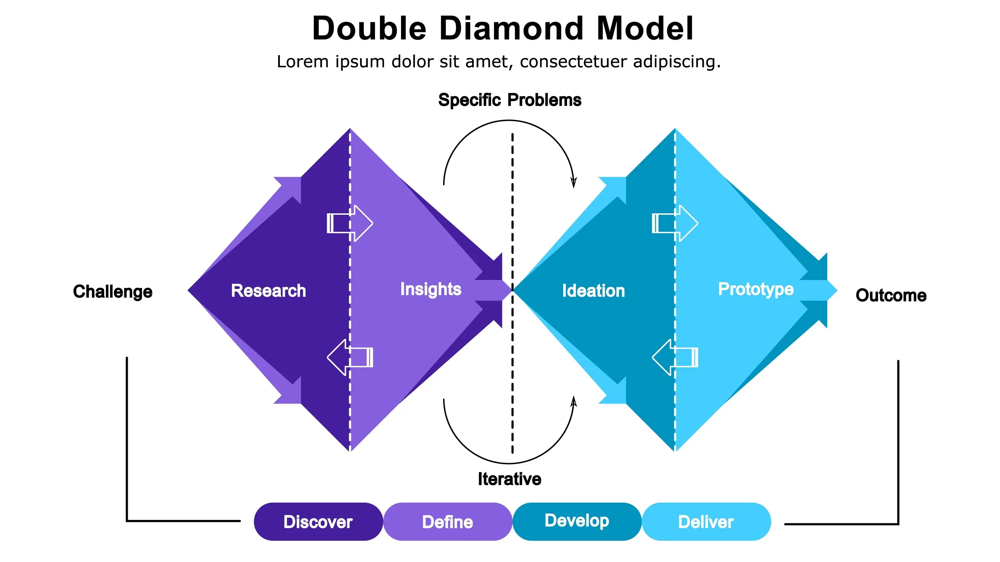

- 2026-03-05
Errors in thinking
1. Bikeshedding
- Pontificating on my understanding of bikeshedding, from the brief description of it I just saw
- The tendency in a group discussion to focus on the trivial details, e.g. the colour of the bike-shed, rather than more complex things
- The implication or here is that there are more complex things that are more consequential, but they are often skipped over
- Why are the skipped over?
- They’re harder to think about. Trivial details are very easy to hold in your head, have opinions about, argue about. Higher-level things are by definition more abstract. E.g., “what session should we run in the morning at this retreat?” = can think of concrete examples of sessions that you’ve attended, picture doing other ones in your head, etc. Vs “what should the purpose of this retreat be” = now we’re in a purely abstract place, harder to hold the concepts in your head in a durable way. I have a lot of rich associations with “4 person morning check-ins”, and I don’t have rich associations with “the purpose of the retreat should be x”. It is, literally, more abstract
- They’re less… satisfying? Fun? Because they’re harder to think about, they feel more nebulous, more frustrating. This feels like a downstream thing of the thing of “they’re harder to think about”
Attempt at making my brain-dump into something logical:
A: More complex things are harder to think about than less complex things
B: Therefore, more complex things are thought about less, by default
C: More important things are often more complex than trivial things
D: Therefore, more important things are thought about less than they should be
The above is my attempt at logic. I’m untrained! I know it’s not good (not valid, I suppose).
Gemini gave feedback on my logic
: More complex things are harder to think about than less complex things
: Thinking about harder things = more effortful
: People tend to avoid effort/exertion, by default
: Therefore, complex things are thought about less, by default
: More important things are often more abstract than trivial things
: Things should be thought about at a rate matching their importance
: Therefore, more important things are thought about less than they should be
2. Solutioneering
- Term for the thing of diving straight into a solution, before clearly identifying the problem
- E.g., a retreat is a solution. The problem(s) it is solving are…
- This feel pretty simple to me, not necessary to explain further
- It’s the mental move of diving straight into the solution space. Engineering solutions
3. The ladder of inference
- I assume this is a thing where people jump too hastily to a conclusion. Like, discussing something briefly, then “aha, I know, we should do x!”, rather than exploring more, considering the thing at different levels of depth, exploring alternatives etc
- I do this all time (I guess you’d call it… unskillfully exploring the ladder of inference? Or some shit?). Like, “I notice x, I have a feeling that y, OMG ok clearly I should do z!!!”, with no thorough exploration of the ladder of inference (I guess in my conception here, the ladder is more of a 2D or 3D or beyond search space, rather than a 1D ladder).
- And then, guess what, I stop doing z after a few days, because it was based on faulty as fuck logic
- So really, unskilfully navigating the ladder of inference feels similar to solutioneering. You briefly explore and then over-index on a solution, skipping layers, not considering alternatives, etc.
Note, apparently I’ve stretched this too far
Claude:
On the ladder of inference, you admit you don’t fully understand it, and I think that shows. You’re using it loosely to mean “the chain of reasoning from observation to conclusion,” which is roughly right, but then you jump to calling it a “multidimensional search space,” which muddies it. I’d suggest actually reading Argyris’s original formulation properly before building on top of it. You’re doing the very thing you’re critiquing — leaping to a conclusion about a concept before you’ve thoroughly explored it.
Solutions
1. First principles thinking
- This is embarrassing, but really useful to name: I don’t fully know what this means
- I think it’s this:
- What are the ground truths? What are the… starting assumptions?
- Reasoning from first principles, as a way to reason from scratch, from the correct core axioms. Rather than inheriting ones that you don’t question, that you take to be true, and therefore build on top of
- So, NOT reasoning from first principles = reasoning from… ignorance, essentially? In the buddhist sense. Reasoning from delusions.
- I like this framing: reasoning from first principles, or reasoning from delusions
- I don’t know if I’m right here, of course
- An example of reasoning from delusions:
- I remembering hearing on a podcast how it was considered a Ground Truth in biology for a long time that the stomach was so acidic that it killed all bacteria (or parasites, or something), and therefore that certain intestinal issues (polyps, or something) couldn’t be caused by diet/ingestion. And it was only when a skeptical scientist actually drank something, experimented on himself, did he show that actually no, clearly the thing I’m drinking is causing the issue, and boom, the believed first principle was shown as collection delusion masquerading as truth. Layer 3 from advaita vedanta, the illusory layer
- So, to reason from first principles is to reason from more empirical truths, layer 2 of advaita vedanta
Gemini addition
To keep your logic balanced, consider this: First principles thinking is “computationally expensive.” * If you reasoned from first principles every time you bought milk (considering the physics of the plastic bottle, the biology of the cow, the economics of the supply chain), you would starve.
The logical fix: We use “Delusions” (Heuristics/Analogies) for 99% of life to save energy. We use “First Principles” for the 1% of things that actually matter or aren’t working.
Claude addition
On first principles thinking, you’re a bit too starry-eyed about it. You frame the dichotomy as “reasoning from first principles vs. reasoning from delusions,” which is dramatic but misleading. Most of what you’re calling “delusions” are actually heuristics that work extremely well most of the time. The Gemini addition about computational expense gestures at this, but I don’t think you’ve fully absorbed it. The real skill isn’t “always reason from first principles” — it’s knowing when your heuristics are likely failing you. That’s a much harder, subtler skill than just “go deeper.”
2. Double Diamond approach
- Excited to use this 😎

- Made a bunch of flashcards, although of course, the trick is to actually use this!
Summary
- Off-the-top-of-my-head summary
- It can be very tempting, and kind of the default way of acting, to rush into solution space. Especially if you feel time constrained!
- In the Double Diamond framework, this is rushing to the second diamond (solution space), before you’ve properly mapped the problem space
- You can have meetings which are too solution space-y, without key axioms agreed upon. Unclear what we’re here to do, other than to “discuss”, “ideate”, etc
- In these kinds of meetings, it can be easy to fall into “bikeshedding”, where you discuss the trivial stuff that is easier to hold in your head, whilst the more abstract and complex stuff is too difficult to make synchronous progress on. It probably should have been done asynchronously and earlier. E.g., the purpose of a retreat, should be the distilled outcome of a “research” phase
- First principles thinking is expensive and effortful. But having a group of people in a meeting with no clear axioms, no clarified purpose, makes it difficult to think, leads to bikeshedding
- Also, people in this state are more likely to make inferential leaps. “Yes, ok cool, the retreat is about x, that sounds good!”, without properly exploring the multidimensional ladder of inference, without considering other options, without ensuring that there are some core axioms, etc
Attempt at a one-paragraph summary
First draft, my problem here is that I feel too time-crunched to do this thoroughly, which is foolish!
- At work, it is possible for a group to come together for a meeting at a suboptimal time. A meeting can discuss the solution-space of a retreat, before the purpose of the retreat is fully articulated. And, as the purpose is difficult to reason about synchronously, people are likely to prefer to talk about the concrete details of e.g. the schedule and possible workshops, despite the fact that the upstream purpose has not been agreed upon, which has a large impact on schedule, aims, etc. Use of the double-diamond framework can help ensure that discussions occur in the correct order, with the problem space explored and key axioms agreed upon before solutions are investigated. Without an awareness of the importance of key axioms, inferential jumps can occur, where things that “sound good” can be agreed upon, despite a lack of agreed upon axioms to attach them to, leading to a piecemeal, disjointed plan.
Second attempt, after getting feedback
In the workplace, it is common for meetings to occur at suboptimal times. An example of this is meeting to discuss solutions, before the problem-space has been adequately mapped. This leads to solutions that are not tied to a precisely defined problem statement, without clear “axioms” for what we are trying to solve. As such, solutions are ad-hoc, piecemeal, non-systematic. A better approach is to agree upon the core problem statement, the core things to be solved, first, and to then treat these things to be solved as axioms that sit at the core of the project, from which the solutions logically flow. This way, there are unifying pieces of shared “truth” that ensure that solutions are coherent. The double diamond framework is a relevant framework here, where the problem space is explored first, followed by the solution space, in a sequential manner. Unplanned meetings can involve both problem- and solution-space mapping at the same time, which doesn’t work well, as the problem space axioms have not been defined, so goalposts and priorities can shift over the course of the meeting, leading to wasted time, and confusion.
That’ll do for now. Took 70 minutes! But, educational. I’m making progress!
I’m used to writing in a very vibe-y way. Switching to writing in a logical way is going to be a gradual process!